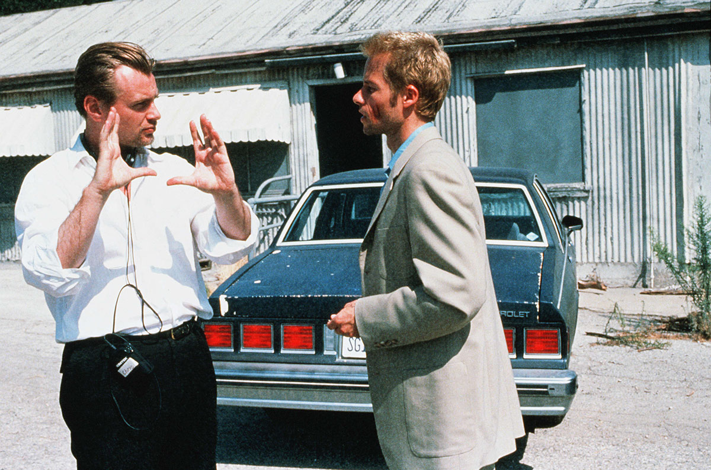

Memento ภาพหลอนซ่อนรอยมรณะ
เนื้อเรื่อง
ลีโอนาร์ด ชายหนุ่มความจำสั้น เขาถูกคนร้ายบุกมาข่มขืนภรรยาตัวเอง และใช้ไม้ทุบหัวทำให้เขาความจำเสื่อมและสร้างความทรงจำใหม่ ๆ ขึ้นมาไม่ได้ ภาพจำสุดท้ายของ ลีโอนาร์ด คือ ฉากที่เห็นภรรยาของตัวเองกำลังโดนโจรทำร้าย ลีโอนาร์ด จึงต้องใช้การถ่ายภาพ และรอยสักเป็นตัวเตือนความจำว่าตัวเองคือใคร และกำลังทำอะไรอยู่ โดยมีเป้าหมายสำคัญก็คือ สืบหาตัวคนร้ายที่ฆ่าภรรยาเขาให้ได้ หนังมาพร้อมเส้นเรื่องสองเส้นที่เล่าไปพร้อมกัน ๆ โดยใช้ ภาพสี ที่เล่าเหตุการณ์ย้อนหลังและ ภาพขาวดำ ที่เล่าเป็นเส้นตรง ผ่านปริศนาการสืบหาฆาตกรจากคดีฆ่าข่มขืนและวิธีการจดจำข้อมูลของลีโอนาร์ดในรูปแบบต่าง ๆ และการลำดับการเล่าเรื่องแบบย้อนหลังนี่เองที่ทำให้เรารู้สึกสนใจจากสิ่งที่หนังจะเล่าในฉากต่อไปเพื่อบอกเหตุผลของการกระทำของตัวละครที่ผ่านมาในฉากที่แล้วได้อย่างน่าติดตาม.
ส่วนที่ดีมาก ๆ ก็คงต้องชมบทภาพยนตร์ที่ออกแบบวิธีการเล่าเรื่องที่มีเอกลักษณ์และต้องใช้สมองคิดตามพอสมควร และมันสื่อถึงสิ่งที่ตัวละครต้องประสบกับอาการสูญเสียคงามทรงจำระยะสั้นได้อย่างดีมาก แต่ถึงแม้การเล่าเรื่องจะดูซับซ้อนซ่อนเงื่อน แต่หนังก็ไม่ได้ดูยากอย่างที่หลาย ๆ คนกล่าวแต่อย่างใด เพียงแต่ต้องจับวิธีการเล่าเรื่องให้ได้ภายในช่วง 10 นาทีแรกและมันจะดูสนุกขึ้นเป็นกอง.

หลายส่วนก็ทำให้ตัวหนังดูมีความเป็นหนังอาชญากรรมที่มีกลิ่นอายเฉพาะตัวพอสมควร ทั้งการสร้างความเคลือบแคลงน่าสงสัยผ่านดนตรีประกอบ รวมถึงจังหวะการตัดต่อที่สลับเส้นเรื่องสองเส้นได้อย่างพอดี ก่อนจะนำไปสู่บทสรุปที่ไม่คาดคิดและลึกซึ้งเกินกว่าที่เราคาดหวังไว้.
การผลิตและกำกับ
ภาพยนตร์เรื่องนี้มีความโดดเด่นอย่างมากในโครงเรื่องและเรื่องราว เรื่องราวจะคลี่คลายออกเป็น 2 ส่วน อันหนึ่งเป็นสีและอีกอันหนึ่งเป็นภาพขาวดำ ส่วนภาพขาวดำเป็นเรื่องเล่าตามลำดับเวลา แสดงเนื้อหาว่าลีโอนาร์ดสนทนาทางโทรศัพท์กับใครบางคนในห้องโมเทล ในส่วนการสืบสวนของลีโอนาร์ดเป็นภาพสีที่จะเล่าเรื่องย้อนหลัง และตั้งแต่เริ่มต้น ผู้ดูจะไม่รู้เหตุการณ์ก่อนหน้า เช่นเดียวกับตัวลีโอนาร์ด โดยให้คนดูเกิดความสับสน จนเมื่อจบเรื่องจะเฉลยการสอบสวนทั้งหมดและเหตุการณ์ที่ทำให้เท็ดดี้เสียชีวิต.